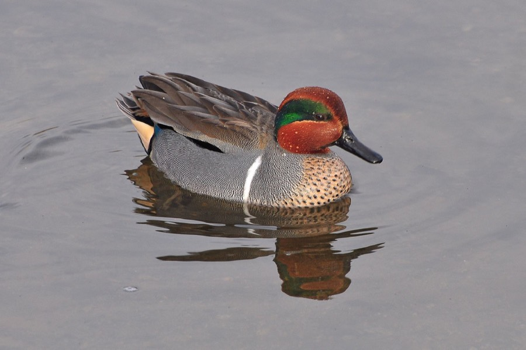

Green-winged Teal
Anas crecca
- Kind
- bird
- Native to Vermont
- yes
- Legal status
- A migrant through Vermont in spring and fall (Champlain Valley checklist); not listed as a Vermont breeder in the sources read. (checked 2026-11-01)
Pictures

Names
Green-winged Teal (Anas crecca).
Range and habitat
Spring and fall visitor in the Champlain Valley (checklist: spring and fall only). Habitat on migration: shallow inland lakes and ponds with abundant vegetation, and coastal estuaries (Audubon); at Dead Creek, wetlands and mud flats managed for waterfowl.
How to identify (by season; look-alikes and the key difference)
Males in breeding plumage: a chestnut head with a green ear patch, a white bar on the side of the chest and a yellow 'tail-light'. Females are small with a strong eyeline and a gray bill. 12 to 15 inches (31 to 38 cm). The male's call is a clear, repeated whistle; females quack (Audubon).
Through the year
Dates are typical for Vermont and shift with elevation and year; "approximate" means the source gave a season and the dates are a translation of it.
| When | What | Look for | What to do | Dates |
|---|---|---|---|---|
| Oct 1 to Dec 5 | migration (watch) | The main fall migration is mostly October to early December (Audubon, general, not a Vermont record); Fish & Wildlife's Dead Creek brochure says waterfowl migrations begin in late September and continue through November. | - | approximate |
Signs on the land (tracks, scat, browse, nests, holes, calls)
The male's clear, repeated whistle (Audubon); the sources read name no other sign.
Role in the forest (what it eats, what eats it, what it needs)
Seeds of grasses, sedges and pondweeds, with more aquatic insects, crustaceans, mollusks and tadpoles in summer (Audubon). Nests (not in the Vermont sources read) usually among the grasses and weeds of meadows within 200 feet of water; 6 to 11 eggs incubated 20 to 24 days (Audubon). Spring migration starts early, with mated pairs often moving north together (Audubon).
What helps it thrive (light, soil, shelter, food and the trees it uses)
Shallow, vegetated freshwater with seeds and invertebrates; the Dead Creek brochure says exposed mud flats, when managers lower the water, attract feeding shorebirds and the managed wetlands support more than 250 species of birds, mammals, reptiles and amphibians. The sources read give no landowner practice for teal.
Managing for it (habitat practices) and living with it (conflicts and damage)
Nothing recorded for private land. Ducks, geese and mergansers have hunting seasons set each year by Vermont Fish & Wildlife in three zones (Lake Champlain, Interior Vermont and Connecticut River). The 2024-25 dates and bag limits are in the Department's 2024 Waterfowl Program Legislative Report (read as text 2026-11-01); they change each year, so check the current Vermont hunting regulations before acting on them. See Waterfowl and Migration in Vermont for the Vermont season table, where to watch, and what helps waterfowl on your land.
Legal status
Native birds are covered by the federal Migratory Bird Treaty Act, which prohibits taking (killing, capturing, selling, trading and transport are named) protected migratory birds without prior authorization (U.S. Fish and Wildlife Service page, read through a summarizing fetch 2026-10-31). The Act applies to native species named in the treaties (50 CFR 10.13); that list was not checked for this species.
Listen
No openly licensed recording of this species was found on Wikimedia Commons (searched 2026-11-01), so there is no player here. Its voice is described in words under How to identify.
Sources
- Vermont Fish & Wildlife, Central Champlain Valley WMAs checklist: https://vtfishandwildlife.com/sites/fishandwildlife/files/documents/WatchWildlife/Champlain-Valley-WMA-Checklist.pdf (read as text 2026-11-01)
- Vermont Fish & Wildlife, Dead Creek WMA brochure: https://vtfishandwildlife.com/sites/fishandwildlife/files/documents/WatchWildlife/dead-creek-brochure-web.pdf (read as text 2026-11-01)
- Audubon, Green-winged Teal: https://www.audubon.org/field-guide/bird/green-winged-teal (summarizing fetch 2026-11-01)
What this page is based on
Kind of source: primary-agency and atlas (Vermont Fish & Wildlife, Vermont Breeding Bird Atlas, Audubon)
What was read: Vermont Fish & Wildlife Champlain Valley WMA checklist and Dead Creek brochure (read as text, 2026-11-01); Audubon Guide to North American Birds (summarizing fetch). Audubon's migration timing is for the species generally, not for Vermont. That it is among Vermont's top harvested ducks is from a search summary of a Fish & Wildlife presentation, not read. The Atlas page for this species was not read. The photograph is from British Columbia.
Last checked: 2026-11-01
Vermont land and forest reference, built 2026-11-01. Rules and dates here are summaries, not legal advice; dates shift with elevation and year. Photo and recording credits · Note: _reference/US-VT/Species/Green-winged Teal.md